Ejercicio 4 - Segmentación de Imágenes Médicas#
En esta seccion, desarrollaremos el EDA y ETL de la base de datos de “Segmentación de Imágenes Médicas” con el fin de comprender y analizar la problematica planteada.
A continuacion, instalaremos las librerias quer seran utilizadas a lo largo del ejercicio.
import os
import numpy as np
import pandas as pd
import matplotlib.pyplot as plt
import seaborn as sns
import cv2
import tifffile as tiff
import json
from matplotlib.patches import Polygon
import tensorflow as tf
df2 = pd.read_csv("HuBMAP-20-dataset_information.csv")
df2 = pd.DataFrame(df2)
df2
| image_file | width_pixels | height_pixels | anatomical_structures_segmention_file | glomerulus_segmentation_file | patient_number | race | ethnicity | sex | age | weight_kilograms | height_centimeters | bmi_kg/m^2 | laterality | percent_cortex | percent_medulla | |
|---|---|---|---|---|---|---|---|---|---|---|---|---|---|---|---|---|
| 0 | aa05346ff.tiff | 47340 | 30720 | aa05346ff-anatomical-structure.json | aa05346ff.json | 67347 | White | Not Hispanic or Latino | Female | 58 | 59.0 | 160.0 | 23.0 | Right | 80 | 20 |
| 1 | afa5e8098.tiff | 43780 | 36800 | afa5e8098-anatomical-structure.json | afa5e8098.json | 67347 | White | Not Hispanic or Latino | Female | 58 | 59.0 | 160.0 | 23.0 | Right | 55 | 45 |
| 2 | 54f2eec69.tiff | 22240 | 30440 | 54f2eec69-anatomical-structure.json | 54f2eec69.json | 67548 | Black or African American | Not Hispanic or Latino | Male | 58 | 79.9 | 190.5 | 22.0 | Right | 75 | 25 |
| 3 | d488c759a.tiff | 29020 | 46660 | d488c759a-anatomical-structure.json | d488c759a.json | 68138 | White | Not Hispanic or Latino | Female | 66 | 81.5 | 158.8 | 32.2 | Left | 100 | 0 |
| 4 | 1e2425f28.tiff | 32220 | 26780 | 1e2425f28-anatomical-structure.json | 1e2425f28.json | 63921 | White | Not Hispanic or Latino | Male | 48 | 131.5 | 193.0 | 35.3 | Right | 65 | 35 |
| 5 | e79de561c.tiff | 27020 | 16180 | e79de561c-anatomical-structure.json | e79de561c.json | 67026 | Black or African American | Not Hispanic or Latino | Male | 53 | 73.0 | 166.0 | 26.5 | Left | 55 | 45 |
| 6 | c68fe75ea.tiff | 49780 | 26840 | c68fe75ea-anatomical-structure.json | c68fe75ea.json | 67112 | White | Not Hispanic or Latino | Male | 56 | 91.2 | 167.6 | 32.5 | Left | 80 | 20 |
| 7 | 095bf7a1f.tiff | 39000 | 38160 | 095bf7a1f-anatomical-structure.json | 095bf7a1f.json | 68250 | White | Not Hispanic or Latino | Female | 44 | 71.7 | 160.0 | 28.0 | Right | 65 | 35 |
| 8 | 26dc41664.tiff | 42360 | 38160 | 26dc41664-anatomical-structure.json | 26dc41664.json | 68304 | White | Not Hispanic or Latino | Female | 66 | 71.3 | 167.6 | 25.4 | Left | 55 | 45 |
| 9 | 57512b7f1.tiff | 43160 | 33240 | 57512b7f1-anatomical-structure.json | 57512b7f1.json | 68555 | White | Not Hispanic or Latino | Female | 76 | 93.0 | 157.4 | 37.5 | Left | 80 | 20 |
| 10 | 4ef6695ce.tiff | 50680 | 39960 | 4ef6695ce-anatomical-structure.json | 4ef6695ce.json | 66999 | White | Not Hispanic or Latino | Male | 56 | 91.4 | 181.6 | 27.7 | Right | 65 | 35 |
| 11 | aaa6a05cc.tiff | 13013 | 18484 | aaa6a05cc-anatomical-structure.json | aaa6a05cc.json | 65631 | White | Not Hispanic or Latino | Female | 73 | NaN | NaN | NaN | Left | 75 | 25 |
| 12 | b9a3865fc.tiff | 40429 | 31295 | b9a3865fc-anatomical-structure.json | b9a3865fc.json | 67347 | White | Not Hispanic or Latino | Female | 58 | 59.0 | 160.0 | 23.0 | Right | 55 | 45 |
| 13 | cb2d976f4.tiff | 49548 | 34940 | cb2d976f4-anatomical-structure.json | cb2d976f4.json | 67548 | Black or African American | Not Hispanic or Latino | Male | 58 | 79.9 | 190.5 | 22.0 | Right | 75 | 25 |
| 14 | b2dc8411c.tiff | 31262 | 14844 | b2dc8411c-anatomical-structure.json | b2dc8411c.json | 67026 | Black or African American | Not Hispanic or Latino | Male | 53 | 73.0 | 166.0 | 26.5 | Left | 55 | 45 |
| 15 | 2ec3f1bb9.tiff | 47723 | 23990 | 2ec3f1bb9-anatomical-structure.json | 2ec3f1bb9.json | 67112 | White | Not Hispanic or Latino | Male | 56 | 91.2 | 167.6 | 32.5 | Left | 80 | 20 |
| 16 | 0486052bb.tiff | 34937 | 25784 | 0486052bb-anatomical-structure.json | 0486052bb.json | 67177 | White | Not Hispanic or Latino | Male | 31 | 106.1 | 180.3 | 32.6 | Right | 80 | 20 |
| 17 | 3589adb90.tiff | 22165 | 29433 | 3589adb90-anatomical-structure.json | 3589adb90.json | 68304 | White | Not Hispanic or Latino | Female | 66 | 71.3 | 167.6 | 25.4 | Left | 55 | 45 |
| 18 | 2f6ecfcdf.tiff | 25794 | 31278 | 2f6ecfcdf-anatomical-structure.json | 2f6ecfcdf.json | 68555 | White | Not Hispanic or Latino | Female | 76 | 93.0 | 157.4 | 37.5 | Left | 80 | 20 |
| 19 | 8242609fa.tiff | 44066 | 31299 | 8242609fa-anatomical-structure.json | 8242609fa.json | 66999 | White | Not Hispanic or Latino | Male | 56 | 91.4 | 181.6 | 27.7 | Right | 65 | 35 |
print("\n Estructura del dataset:")
print(df2.shape)
print("\n Nombre de variables")
print(df2.columns)
Estructura del dataset:
(20, 16)
Nombre de variables
Index(['image_file', 'width_pixels', 'height_pixels',
'anatomical_structures_segmention_file', 'glomerulus_segmentation_file',
'patient_number', 'race', 'ethnicity', 'sex', 'age', 'weight_kilograms',
'height_centimeters', 'bmi_kg/m^2', 'laterality', 'percent_cortex',
'percent_medulla'],
dtype='object')
df2.isnull().sum()
image_file 0
width_pixels 0
height_pixels 0
anatomical_structures_segmention_file 0
glomerulus_segmentation_file 0
patient_number 0
race 0
ethnicity 0
sex 0
age 0
weight_kilograms 1
height_centimeters 1
bmi_kg/m^2 1
laterality 0
percent_cortex 0
percent_medulla 0
dtype: int64
Observamos que la base de datos contiene datos faltanes. Estos se encuentran en la muestra dek paciente ‘65631’ el cual presenta NA en las variables ‘height_centimeters’, ‘weight_kilograms’, ‘bmi_kg/m^2’. Al tener una base de datos con pocas muestras (20 en total), decidimos reemplazar los valores de NA por la mediana de cada variable en funcion del sexo, de esta forma mantenemos la armonia estadistica de los datos.
df2['height_centimeters'] = df2.groupby('sex')['height_centimeters'].transform(
lambda x: x.fillna(x.median())
)
df2['weight_kilograms'] = df2.groupby('sex')['weight_kilograms'].transform(
lambda x: x.fillna(x.median())
)
df2['bmi_kg/m^2'] = df2.groupby('sex')['bmi_kg/m^2'].transform(
lambda x: x.fillna(x.median())
)
df2.isnull().sum()
image_file 0
width_pixels 0
height_pixels 0
anatomical_structures_segmention_file 0
glomerulus_segmentation_file 0
patient_number 0
race 0
ethnicity 0
sex 0
age 0
weight_kilograms 0
height_centimeters 0
bmi_kg/m^2 0
laterality 0
percent_cortex 0
percent_medulla 0
dtype: int64
Observamos que una vez realizado este cambio, contamos con la base de datos completa y con esto procederemos con el analisis demografico.
Analisis demografico#
# Estilo general
sns.set(style="whitegrid", palette="pastel")
fig, axes = plt.subplots(1, 4, figsize=(20, 6))
# Gráfico de Etnia (categórica)
sns.countplot(data=df2, x='ethnicity', ax=axes[0], color='skyblue', edgecolor='black')
axes[0].set_title('Distribución de Etnia', fontsize=14)
axes[0].set_xlabel('Etnia')
axes[0].set_ylabel('Frecuencia')
# 2. Gráfico de Sexo (categórica)
sns.countplot(data=df2, x='sex', ax=axes[1], color='lightgreen', edgecolor='black')
axes[1].set_title('Distribución por Sexo', fontsize=14)
axes[1].set_xlabel('Sexo')
axes[1].set_ylabel('Frecuencia')
# 3. Histograma de Edad (numérica)
sns.histplot(data=df2, x='age', bins=10, kde=True, ax=axes[2], color='salmon', edgecolor='black')
axes[2].set_title('Distribución de Edad', fontsize=14)
axes[2].set_xlabel('Edad')
axes[2].set_ylabel('Frecuencia')
# 3. Histograma de Edad (numérica)
sns.histplot(data=df2, x='race', bins=10, kde=True, ax=axes[3], color='lightyellow', edgecolor='black')
axes[3].set_title('Distribución de Raza', fontsize=14)
axes[3].set_xlabel('raza')
axes[3].set_ylabel('Frecuencia')
# Mostrar todo junto
plt.tight_layout()
plt.show()
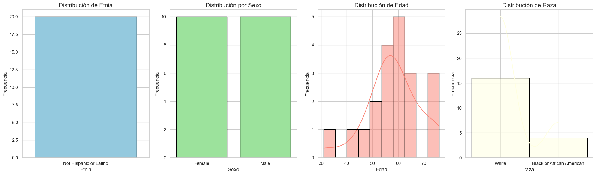
Observamos…
plt.figure(figsize=(8, 6))
sns.boxplot(data=df2, x='sex', y='age', palette='Set3')
plt.title("Distribución de edad por sexo", fontsize=14)
plt.ylabel("edad")
plt.xlabel("sexo")
plt.xticks(rotation=15)
plt.show()
/var/folders/k9/_sfb2dlj32z_v_srr2ny3qnm0000gn/T/ipykernel_27375/1418853411.py:2: FutureWarning:
Passing `palette` without assigning `hue` is deprecated and will be removed in v0.14.0. Assign the `x` variable to `hue` and set `legend=False` for the same effect.
sns.boxplot(data=df2, x='sex', y='age', palette='Set3')
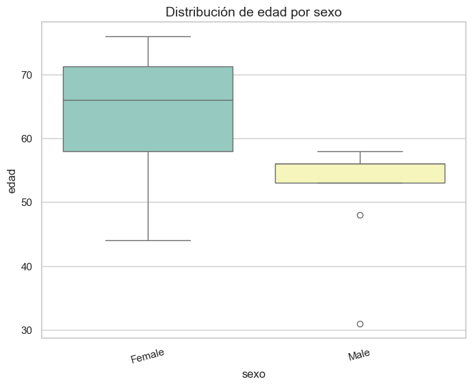
observamos…
# Gráfico de barras agrupadas
plt.figure(figsize=(8,6))
sns.countplot(data=df2, x="sex", hue="race", palette="pastel")
plt.title("Distribución de raza por genero")
plt.show()
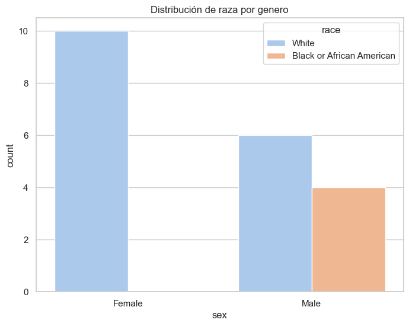
observamos…
Analisis de caracteristicas fisicas#
plt.figure(figsize=(8, 6))
sns.boxplot(data=df2, x='sex', y='bmi_kg/m^2', palette='Set2')
plt.title("Distribución de BMI por Sexo", fontsize=14)
plt.ylabel("BMI (kg/m²)")
plt.xlabel("Sexo")
plt.show()
/var/folders/k9/_sfb2dlj32z_v_srr2ny3qnm0000gn/T/ipykernel_27375/868853861.py:2: FutureWarning:
Passing `palette` without assigning `hue` is deprecated and will be removed in v0.14.0. Assign the `x` variable to `hue` and set `legend=False` for the same effect.
sns.boxplot(data=df2, x='sex', y='bmi_kg/m^2', palette='Set2')
plt.figure(figsize=(8, 6))
sns.violinplot(data=df2, x='race', y='height_centimeters', palette='Set3')
plt.title("Distribución de Altura por Raza", fontsize=14)
plt.ylabel("Altura (cm))")
plt.xlabel("Raza")
plt.show()
/var/folders/k9/_sfb2dlj32z_v_srr2ny3qnm0000gn/T/ipykernel_27375/3371574219.py:2: FutureWarning:
Passing `palette` without assigning `hue` is deprecated and will be removed in v0.14.0. Assign the `x` variable to `hue` and set `legend=False` for the same effect.
sns.violinplot(data=df2, x='race', y='height_centimeters', palette='Set3')
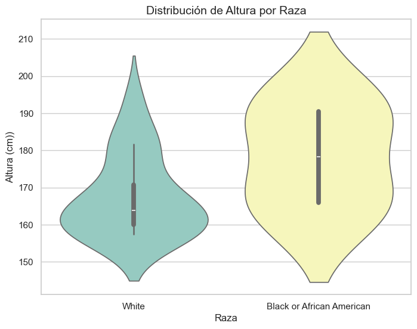
plt.figure(figsize=(8, 6))
sns.boxplot(data=df2, x='sex', y='weight_kilograms', palette='Set1')
plt.title("Distribución de Peso por Sexo", fontsize=14)
plt.ylabel("Peso (kg)")
plt.xlabel("Sexo")
plt.show()
/var/folders/k9/_sfb2dlj32z_v_srr2ny3qnm0000gn/T/ipykernel_27375/1425745677.py:2: FutureWarning:
Passing `palette` without assigning `hue` is deprecated and will be removed in v0.14.0. Assign the `x` variable to `hue` and set `legend=False` for the same effect.
sns.boxplot(data=df2, x='sex', y='weight_kilograms', palette='Set1')
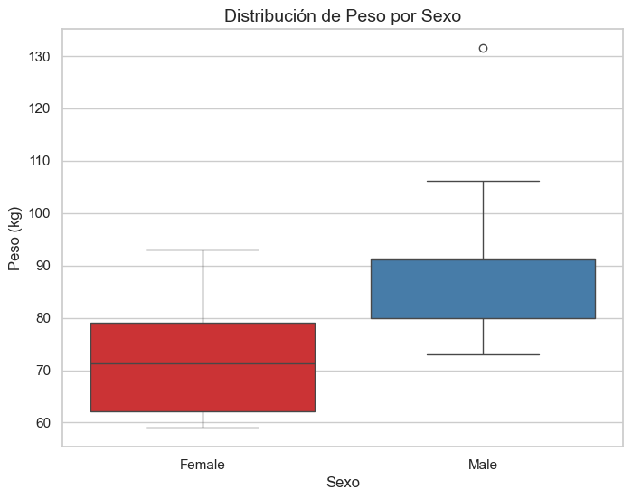
Analisis de Anatoimia#
df2['image_area'] = df2['width_pixels'] * df2['height_pixels']
plt.figure(figsize=(8,6))
sns.scatterplot(data=df2, x='age', y='image_area')
plt.title('Relación entre Edad y Tamaño de Imagen (Área)')
plt.xlabel('Edad del Paciente')
plt.ylabel('Área de Imagen (pixeles)')
plt.show()
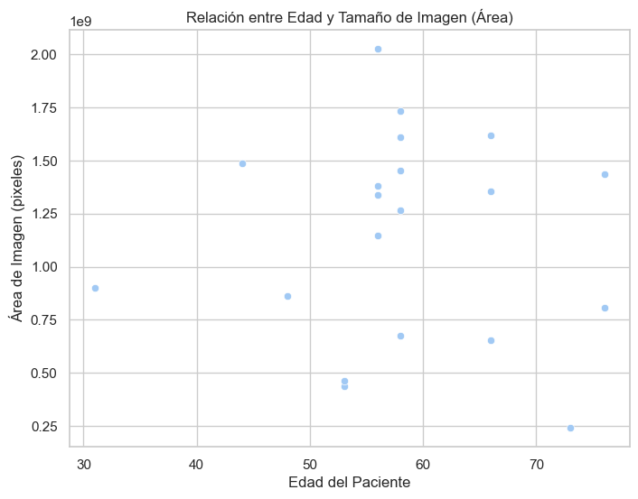
correlacion = df2['age'].corr(df2['image_area'])
print(f"Coeficiente de correlación: {correlacion:.2f}")
Coeficiente de correlación: -0.04
plt.figure(figsize=(12,5))
# Comparar percent_cortex
plt.subplot(1, 2, 1)
sns.boxplot(data=df2, x='laterality', y='percent_cortex', palette='Set2')
plt.title('Porcentaje de Corteza por Laterality')
plt.ylabel('% Corteza')
plt.xlabel('Laterality')
# Comparar percent_medulla
plt.subplot(1, 2, 2)
sns.boxplot(data=df2, x='laterality', y='percent_medulla', palette='Set3')
plt.title('Porcentaje de Médula por Laterality')
plt.ylabel('% Médula')
plt.xlabel('Laterality')
plt.tight_layout()
plt.show()
/var/folders/k9/_sfb2dlj32z_v_srr2ny3qnm0000gn/T/ipykernel_27375/4184766052.py:5: FutureWarning:
Passing `palette` without assigning `hue` is deprecated and will be removed in v0.14.0. Assign the `x` variable to `hue` and set `legend=False` for the same effect.
sns.boxplot(data=df2, x='laterality', y='percent_cortex', palette='Set2')
/var/folders/k9/_sfb2dlj32z_v_srr2ny3qnm0000gn/T/ipykernel_27375/4184766052.py:12: FutureWarning:
Passing `palette` without assigning `hue` is deprecated and will be removed in v0.14.0. Assign the `x` variable to `hue` and set `legend=False` for the same effect.
sns.boxplot(data=df2, x='laterality', y='percent_medulla', palette='Set3')
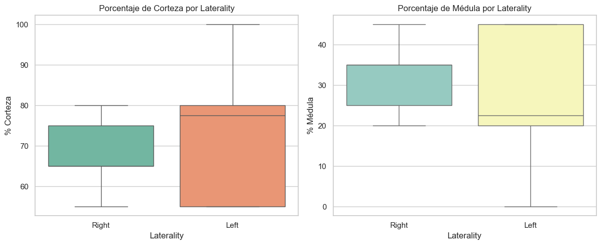
df2[['patient_number', 'percent_cortex', 'percent_medulla']].groupby('patient_number').mean().plot.bar(figsize=(12,5))
plt.title('Promedio de Corteza y Médula por Paciente')
plt.ylabel('%')
plt.xlabel('Paciente')
plt.xticks(rotation=45)
plt.show()
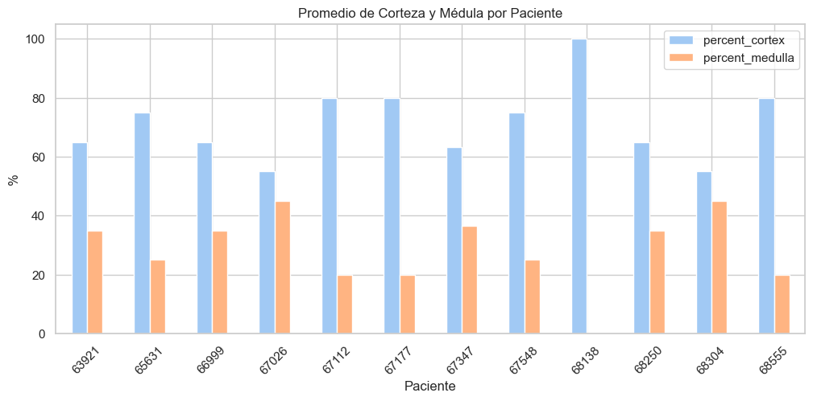
Visualizacion de imagenes#
im1 = '/Users/user/Desktop/Maestria 2025/Maestria Uninorte/Primer semestre 2025/Machine Learning/train/afa5e8098.tiff'
json1 = '/Users/user/Desktop/Maestria 2025/Maestria Uninorte/Primer semestre 2025/Machine Learning/train/afa5e8098-anatomical-structure.json'
json12 = '/Users/user/Desktop/Maestria 2025/Maestria Uninorte/Primer semestre 2025/Machine Learning/train/afa5e8098.json'
im2 = '/Users/user/Desktop/Maestria 2025/Maestria Uninorte/Primer semestre 2025/Machine Learning/train/2f6ecfcdf.tiff'
json2 = '/Users/user/Desktop/Maestria 2025/Maestria Uninorte/Primer semestre 2025/Machine Learning/train/2f6ecfcdf-anatomical-structure.json'
json22 = '/Users/user/Desktop/Maestria 2025/Maestria Uninorte/Primer semestre 2025/Machine Learning/train/2f6ecfcdf.json'
im3 = '/Users/user/Desktop/Maestria 2025/Maestria Uninorte/Primer semestre 2025/Machine Learning/train/b2dc8411c.tiff'
json3 = '/Users/user/Desktop/Maestria 2025/Maestria Uninorte/Primer semestre 2025/Machine Learning/train/b2dc8411c-anatomical-structure.json'
json32 = '/Users/user/Desktop/Maestria 2025/Maestria Uninorte/Primer semestre 2025/Machine Learning/train/b2dc8411c.json'
im4 = '/Users/user/Desktop/Maestria 2025/Maestria Uninorte/Primer semestre 2025/Machine Learning/train/0486052bb.tiff'
json4 = '/Users/user/Desktop/Maestria 2025/Maestria Uninorte/Primer semestre 2025/Machine Learning/train/0486052bb-anatomical-structure.json'
json42 = '/Users/user/Desktop/Maestria 2025/Maestria Uninorte/Primer semestre 2025/Machine Learning/train/0486052bb.json'
import rasterio
from rasterio.plot import show
from matplotlib.lines import Line2D
# === Leer imagen TIFF ===
with rasterio.open(im1) as src:
img = src.read(1)
transform = src.transform # opcional si quieres georreferenciación
# === Leer anotaciones JSON ===
with open(json1, 'r') as f:
data = json.load(f)
# === Colores por clase ===
color_map = {
"Cortex": "blue",
"Medulla": "green"
}
# === Visualización ===
fig, ax = plt.subplots(figsize=(15, 15))
show(img, ax=ax, cmap='gray') # Mostrar imagen TIFF
# Dibujar polígonos
for feature in data:
coords = feature['geometry']['coordinates'][0]
tipo = feature['properties']['classification']['name']
color = color_map.get(tipo, "red") # Color por defecto: rojo
poly = Polygon(coords, closed=True, edgecolor=color, fill=True,
facecolor=color, alpha=0.3, linewidth=2, label=tipo)
ax.add_patch(poly)
# Eliminar duplicados en la leyenda
handles = [
Line2D([0], [0], color='blue', label='Cortex', linewidth=2),
Line2D([0], [0], color='green', label='Medulla', linewidth=2)
]
ax.legend(handles=handles, title="Estructuras", loc="upper right")
ax.set_title("Superposición de estructuras anatómicas")
ax.axis('off')
plt.show()
/opt/miniconda3/envs/ml_venv/lib/python3.9/site-packages/rasterio/__init__.py:356: NotGeoreferencedWarning: Dataset has no geotransform, gcps, or rpcs. The identity matrix will be returned.
dataset = DatasetReader(path, driver=driver, sharing=sharing, **kwargs)
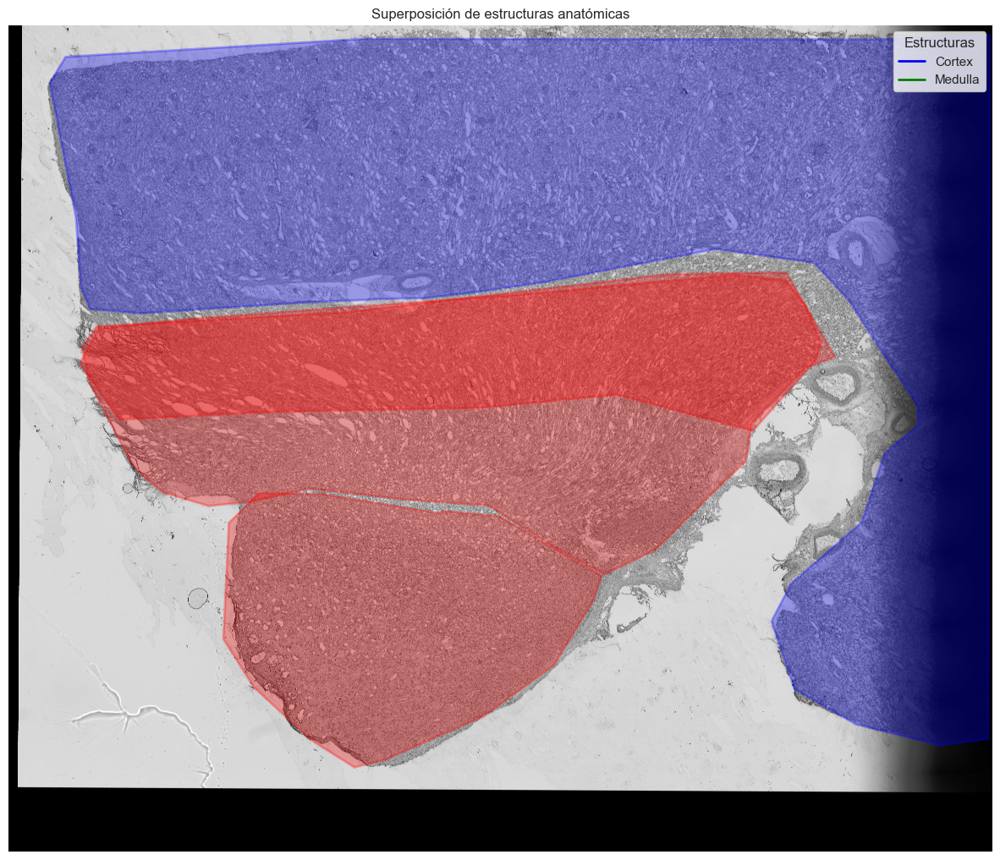
from matplotlib.patches import Polygon
# Cargar anotaciones de glomerulus
with open(json12) as f:
data_glom = json.load(f)
plt.figure(figsize=(10, 10))
plt.imshow(img, cmap='gray')
plt.axis('off')
plt.title('Imagen con glomeruli')
# Dibujar los glomeruli en rojo
for feature in data_glom:
if feature['properties']['classification']['name'].lower() == "glomerulus":
coords = feature['geometry']['coordinates'][0]
poly = Polygon(coords, closed=True, edgecolor='red', fill=False, linewidth=1.5)
plt.gca().add_patch(poly)
plt.show()
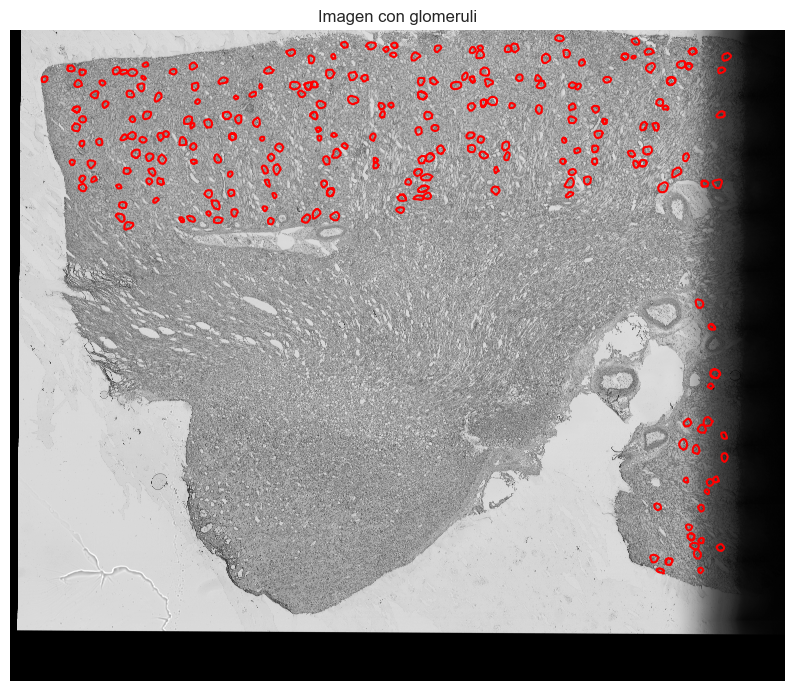
import rasterio
from rasterio.plot import show
# Cargar el TIFF
with rasterio.open(im2) as src:
img = src.read(1) # Lee solo el primer canal si es multibanda
transform = src.transform # Opcional: para georreferenciación
# Cargar el JSON
with open(json2, 'r') as f:
data = json.load(f)
# Crear la figura
fig, ax = plt.subplots(figsize=(15, 15))
show(img, ax=ax, cmap='gray') # Mostrar el TIFF en escala de grises
# Dibujar los polígonos manualmente
color_map = {
"Medulla": "red",
"Cortex": "blue"
}
for feature in data:
coords = feature['geometry']['coordinates'][0] # Extraer coordenadas del polígono
classification = feature['properties']['classification']['name']
color = color_map.get(classification, "gray")
# Dibujar el polígono
poly = plt.Polygon(coords, fill=True, color=color, alpha=0.3, label=classification)
ax.add_patch(poly)
# Añadir leyenda y título
handles, labels = ax.get_legend_handles_labels()
ax.legend(handles, labels, title="Estructura")
ax.set_title("Superposición de estructuras anatómicas")
plt.show()
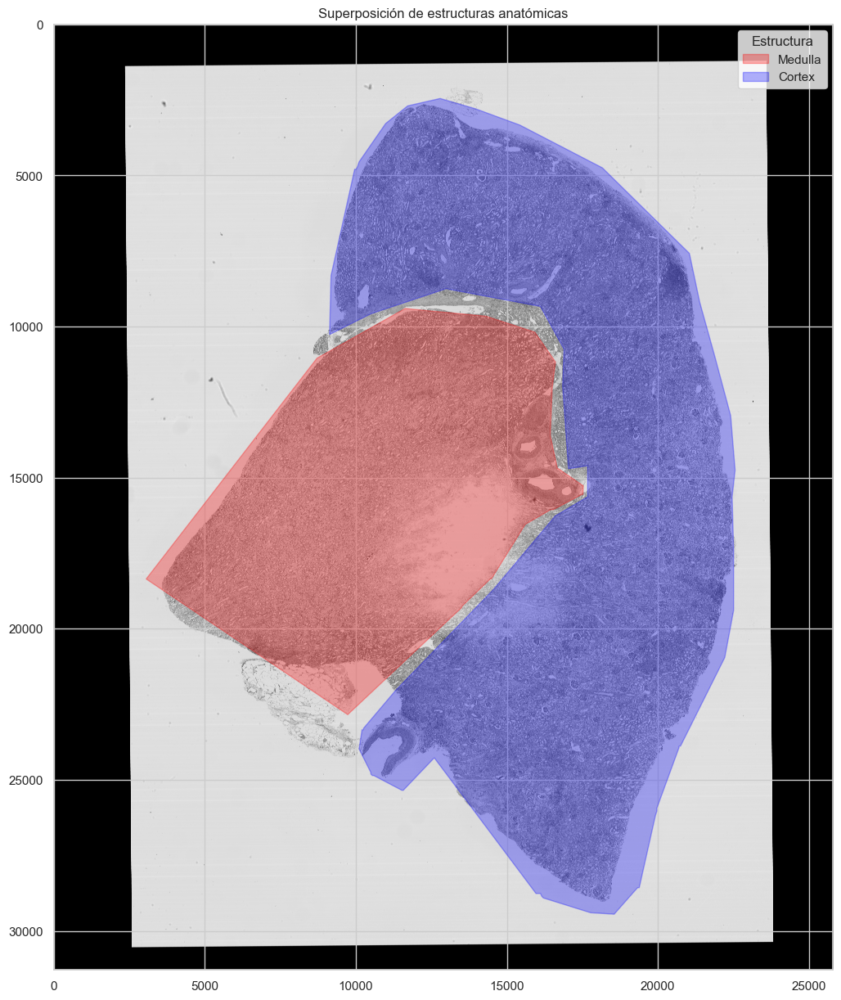
# Cargar anotaciones de glomerulus
with open(json22) as f:
data_glom = json.load(f)
plt.figure(figsize=(10, 10))
plt.imshow(img, cmap='gray')
plt.axis('off')
plt.title('Imagen con glomeruli')
# Dibujar los glomeruli en rojo
for feature in data_glom:
if feature['properties']['classification']['name'].lower() == "glomerulus":
coords = feature['geometry']['coordinates'][0]
poly = Polygon(coords, closed=True, edgecolor='red', fill=False, linewidth=1.5)
plt.gca().add_patch(poly)
plt.show()
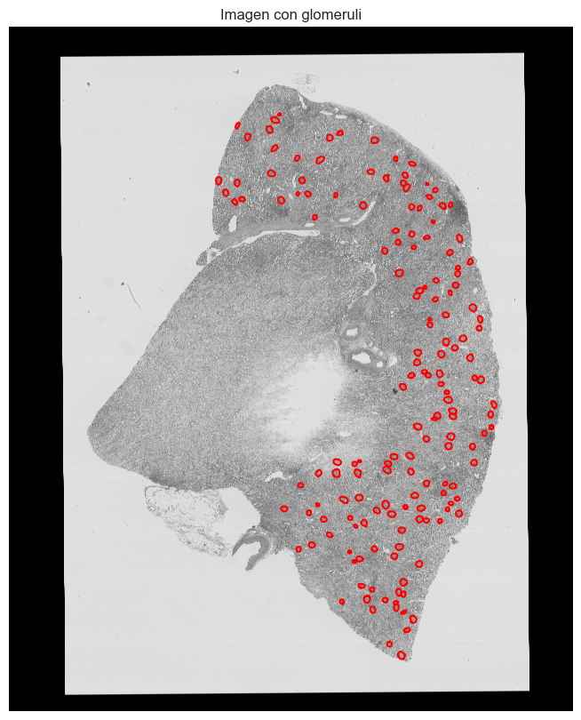
# Cargar el TIFF
with rasterio.open(im3) as src:
img = src.read(1) # Lee solo el primer canal si es multibanda
transform = src.transform # Opcional: para georreferenciación
# Cargar el JSON
with open(json3, 'r') as f:
data = json.load(f)
# Crear la figura
fig, ax = plt.subplots(figsize=(15, 15))
show(img, ax=ax, cmap='gray') # Mostrar el TIFF en escala de grises
# Dibujar los polígonos manualmente
color_map = {
"Medulla": "red",
"Cortex": "blue"
}
for feature in data:
coords = feature['geometry']['coordinates'][0] # Extraer coordenadas del polígono
classification = feature['properties']['classification']['name']
color = color_map.get(classification, "gray")
# Dibujar el polígono
poly = plt.Polygon(coords, fill=True, color=color, alpha=0.3, label=classification)
ax.add_patch(poly)
# Añadir leyenda y título
handles, labels = ax.get_legend_handles_labels()
ax.legend(handles, labels, title="Estructura")
ax.set_title("Superposición de estructuras anatómicas")
plt.show()
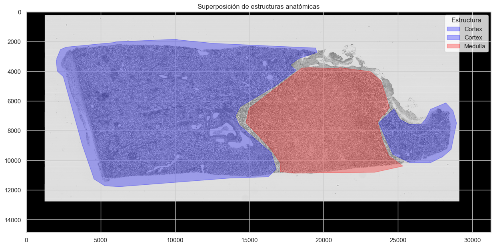
# Cargar anotaciones de glomerulus
with open(json32) as f:
data_glom = json.load(f)
plt.figure(figsize=(10, 10))
plt.imshow(img, cmap='gray')
plt.axis('off')
plt.title('Imagen con glomeruli')
# Dibujar los glomeruli en rojo
for feature in data_glom:
if feature['properties']['classification']['name'].lower() == "glomerulus":
coords = feature['geometry']['coordinates'][0]
poly = Polygon(coords, closed=True, edgecolor='red', fill=False, linewidth=1.5)
plt.gca().add_patch(poly)
plt.show()
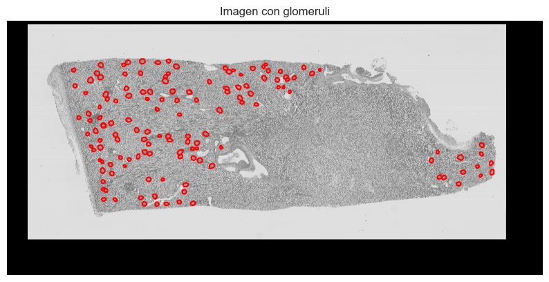
# Cargar el TIFF
with rasterio.open(im4) as src:
img = src.read(1) # Lee solo el primer canal si es multibanda
transform = src.transform # Opcional: para georreferenciación
# Cargar el JSON
with open(json4, 'r') as f:
data = json.load(f)
# Crear la figura
fig, ax = plt.subplots(figsize=(15, 15))
show(img, ax=ax, cmap='gray') # Mostrar el TIFF en escala de grises
# Dibujar los polígonos manualmente
color_map = {
"Medulla": "red",
"Cortex": "blue"
}
for feature in data:
coords = feature['geometry']['coordinates'][0] # Extraer coordenadas del polígono
classification = feature['properties']['classification']['name']
color = color_map.get(classification, "gray")
# Dibujar el polígono
poly = plt.Polygon(coords, fill=True, color=color, alpha=0.3, label=classification)
ax.add_patch(poly)
# Añadir leyenda y título
handles, labels = ax.get_legend_handles_labels()
ax.legend(handles, labels, title="Estructura")
ax.set_title("Superposición de estructuras anatómicas")
plt.show()
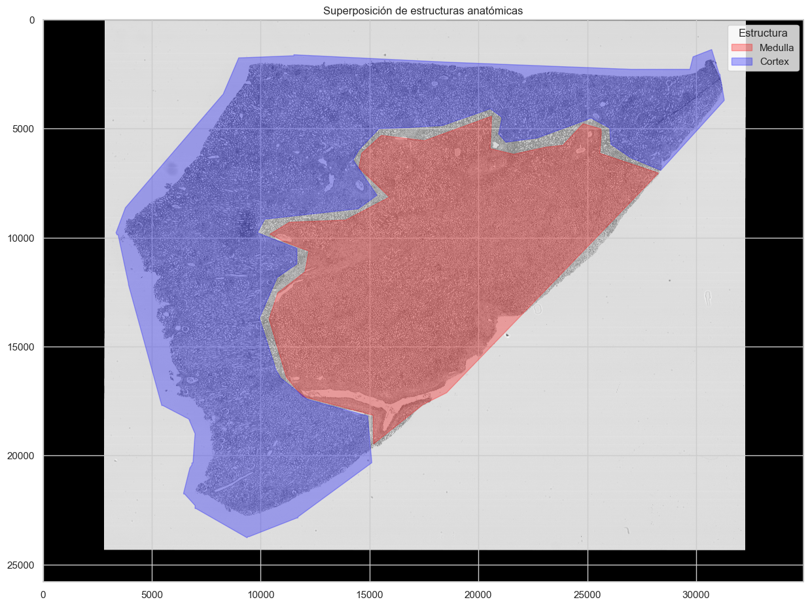
# Cargar anotaciones de glomerulus
with open(json42) as f:
data_glom = json.load(f)
plt.figure(figsize=(10, 10))
plt.imshow(img, cmap='gray')
plt.axis('off')
plt.title('Imagen con glomeruli')
# Dibujar los glomeruli en rojo
for feature in data_glom:
if feature['properties']['classification']['name'].lower() == "glomerulus":
coords = feature['geometry']['coordinates'][0]
poly = Polygon(coords, closed=True, edgecolor='red', fill=False, linewidth=1.5)
plt.gca().add_patch(poly)
plt.show()
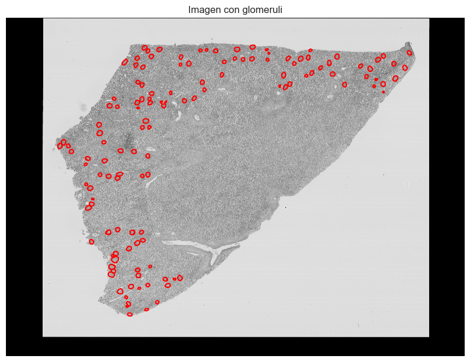
Desarrollo de modelos de segmentacion - Entrenamiento#
Debemos realizar
df3 = pd.read_csv("train.csv")
df3
| id | encoding | |
|---|---|---|
| 0 | 2f6ecfcdf | 296084587 4 296115835 6 296115859 14 296147109... |
| 1 | 8242609fa | 96909968 56 96941265 60 96972563 64 97003861 6... |
| 2 | aaa6a05cc | 30989109 59 31007591 64 31026074 68 31044556 7... |
| 3 | cb2d976f4 | 78144363 5 78179297 15 78214231 25 78249165 35... |
| 4 | b9a3865fc | 61271840 4 61303134 13 61334428 22 61365722 30... |
| 5 | b2dc8411c | 56157731 21 56172571 45 56187411 51 56202252 5... |
| 6 | 0486052bb | 101676003 6 101701785 8 101727568 9 101753351 ... |
| 7 | e79de561c | 7334642 14 7350821 41 7367001 67 7383180 82 73... |
| 8 | 095bf7a1f | 113277795 21 113315936 53 113354083 87 1133922... |
| 9 | 54f2eec69 | 124967057 36 124997425 109 125027828 147 12505... |
| 10 | 4ef6695ce | 137041956 58 137081912 65 137121869 72 1371618... |
| 11 | 26dc41664 | 245832956 28 245869925 2 245871115 33 24590808... |
| 12 | c68fe75ea | 21256809 3 21283644 10 21310479 17 21337315 22... |
| 13 | afa5e8098 | 65837968 7 65874765 11 65874827 12 65911562 15... |
| 14 | 1e2425f28 | 49453112 7 49479881 22 49506657 31 49533433 40... |
df_info = df2.copy()
df_info['id'] = df_info['image_file'].str.replace(".tiff", "", regex=False)
# Unir por la columna 'id'
df_merged = df3.merge(df_info[['id', 'height_pixels', 'width_pixels']], on='id', how='left')
df_merged['shape'] = list(zip(df_merged['height_pixels'], df_merged['width_pixels']))
df_merged
| id | encoding | height_pixels | width_pixels | shape | |
|---|---|---|---|---|---|
| 0 | 2f6ecfcdf | 296084587 4 296115835 6 296115859 14 296147109... | 31278 | 25794 | (31278, 25794) |
| 1 | 8242609fa | 96909968 56 96941265 60 96972563 64 97003861 6... | 31299 | 44066 | (31299, 44066) |
| 2 | aaa6a05cc | 30989109 59 31007591 64 31026074 68 31044556 7... | 18484 | 13013 | (18484, 13013) |
| 3 | cb2d976f4 | 78144363 5 78179297 15 78214231 25 78249165 35... | 34940 | 49548 | (34940, 49548) |
| 4 | b9a3865fc | 61271840 4 61303134 13 61334428 22 61365722 30... | 31295 | 40429 | (31295, 40429) |
| 5 | b2dc8411c | 56157731 21 56172571 45 56187411 51 56202252 5... | 14844 | 31262 | (14844, 31262) |
| 6 | 0486052bb | 101676003 6 101701785 8 101727568 9 101753351 ... | 25784 | 34937 | (25784, 34937) |
| 7 | e79de561c | 7334642 14 7350821 41 7367001 67 7383180 82 73... | 16180 | 27020 | (16180, 27020) |
| 8 | 095bf7a1f | 113277795 21 113315936 53 113354083 87 1133922... | 38160 | 39000 | (38160, 39000) |
| 9 | 54f2eec69 | 124967057 36 124997425 109 125027828 147 12505... | 30440 | 22240 | (30440, 22240) |
| 10 | 4ef6695ce | 137041956 58 137081912 65 137121869 72 1371618... | 39960 | 50680 | (39960, 50680) |
| 11 | 26dc41664 | 245832956 28 245869925 2 245871115 33 24590808... | 38160 | 42360 | (38160, 42360) |
| 12 | c68fe75ea | 21256809 3 21283644 10 21310479 17 21337315 22... | 26840 | 49780 | (26840, 49780) |
| 13 | afa5e8098 | 65837968 7 65874765 11 65874827 12 65911562 15... | 36800 | 43780 | (36800, 43780) |
| 14 | 1e2425f28 | 49453112 7 49479881 22 49506657 31 49533433 40... | 26780 | 32220 | (26780, 32220) |
def rle_decode(mask_rle, shape):
height, width = shape
mask = np.zeros(height * width, dtype=np.uint8)
if mask_rle == "": # Manejo de encodings vacíos
return mask.reshape(height, width)
# Convertir el string a array de enteros
array = np.asarray([int(x) for x in mask_rle.split()])
# Los valores pares (0, 2, 4, ...) son las posiciones de inicio
# Los valores impares (1, 3, 5, ...) son las longitudes de los segmentos
starts = array[0::2] - 1 # RLE generalmente usa indexación desde 1
lengths = array[1::2]
# Configurar los valores en la máscara
for start, length in zip(starts, lengths):
mask[start:start + length] = 1
# Remodelar la máscara a las dimensiones de la imagen
return mask.reshape(shape)
# Añadir una columna con las máscaras decodificadas
df_merged['mask'] = df_merged.apply(
lambda row: rle_decode(row['encoding'], row['shape']),
axis=1
)
df_merged
| id | encoding | height_pixels | width_pixels | shape | mask | |
|---|---|---|---|---|---|---|
| 0 | 2f6ecfcdf | 296084587 4 296115835 6 296115859 14 296147109... | 31278 | 25794 | (31278, 25794) | [[0, 0, 0, 0, 0, 0, 0, 0, 0, 0, 0, 0, 0, 0, 0,... |
| 1 | 8242609fa | 96909968 56 96941265 60 96972563 64 97003861 6... | 31299 | 44066 | (31299, 44066) | [[0, 0, 0, 0, 0, 0, 0, 0, 0, 0, 0, 0, 0, 0, 0,... |
| 2 | aaa6a05cc | 30989109 59 31007591 64 31026074 68 31044556 7... | 18484 | 13013 | (18484, 13013) | [[0, 0, 0, 0, 0, 0, 0, 0, 0, 0, 0, 0, 0, 0, 0,... |
| 3 | cb2d976f4 | 78144363 5 78179297 15 78214231 25 78249165 35... | 34940 | 49548 | (34940, 49548) | [[0, 0, 0, 0, 0, 0, 0, 0, 0, 0, 0, 0, 0, 0, 0,... |
| 4 | b9a3865fc | 61271840 4 61303134 13 61334428 22 61365722 30... | 31295 | 40429 | (31295, 40429) | [[0, 0, 0, 0, 0, 0, 0, 0, 0, 0, 0, 0, 0, 0, 0,... |
| 5 | b2dc8411c | 56157731 21 56172571 45 56187411 51 56202252 5... | 14844 | 31262 | (14844, 31262) | [[0, 0, 0, 0, 0, 0, 0, 0, 0, 0, 0, 0, 0, 0, 0,... |
| 6 | 0486052bb | 101676003 6 101701785 8 101727568 9 101753351 ... | 25784 | 34937 | (25784, 34937) | [[0, 0, 0, 0, 0, 0, 0, 0, 0, 0, 0, 0, 0, 0, 0,... |
| 7 | e79de561c | 7334642 14 7350821 41 7367001 67 7383180 82 73... | 16180 | 27020 | (16180, 27020) | [[0, 0, 0, 0, 0, 0, 0, 0, 0, 0, 0, 0, 0, 0, 0,... |
| 8 | 095bf7a1f | 113277795 21 113315936 53 113354083 87 1133922... | 38160 | 39000 | (38160, 39000) | [[0, 0, 0, 0, 0, 0, 0, 0, 0, 0, 0, 0, 0, 0, 0,... |
| 9 | 54f2eec69 | 124967057 36 124997425 109 125027828 147 12505... | 30440 | 22240 | (30440, 22240) | [[0, 0, 0, 0, 0, 0, 0, 0, 0, 0, 0, 0, 0, 0, 0,... |
| 10 | 4ef6695ce | 137041956 58 137081912 65 137121869 72 1371618... | 39960 | 50680 | (39960, 50680) | [[0, 0, 0, 0, 0, 0, 0, 0, 0, 0, 0, 0, 0, 0, 0,... |
| 11 | 26dc41664 | 245832956 28 245869925 2 245871115 33 24590808... | 38160 | 42360 | (38160, 42360) | [[0, 0, 0, 0, 0, 0, 0, 0, 0, 0, 0, 0, 0, 0, 0,... |
| 12 | c68fe75ea | 21256809 3 21283644 10 21310479 17 21337315 22... | 26840 | 49780 | (26840, 49780) | [[0, 0, 0, 0, 0, 0, 0, 0, 0, 0, 0, 0, 0, 0, 0,... |
| 13 | afa5e8098 | 65837968 7 65874765 11 65874827 12 65911562 15... | 36800 | 43780 | (36800, 43780) | [[0, 0, 0, 0, 0, 0, 0, 0, 0, 0, 0, 0, 0, 0, 0,... |
| 14 | 1e2425f28 | 49453112 7 49479881 22 49506657 31 49533433 40... | 26780 | 32220 | (26780, 32220) | [[0, 0, 0, 0, 0, 0, 0, 0, 0, 0, 0, 0, 0, 0, 0,... |
from sklearn.model_selection import train_test_split
from tqdm import tqdm
# Parámetros de imagen
IMG_HEIGHT = 256
IMG_WIDTH = 256
# Directorio donde están tus imágenes originales
IMAGES_DIR = '/Users/user/Desktop/Maestria 2025/Maestria Uninorte/Primer semestre 2025/Machine Learning/train'
Las funciones para preprocesar las imagenes y reducir sus dimensiones y el generador del df con esas imagenes reprocesadas
import tensorflow as tf
import tifffile
# Función para preprocesar
def preprocess_image_and_mask(image, mask, target_size=(512, 512)):
image = tf.image.resize(image, target_size, method='bilinear')
mask = tf.image.resize(mask, target_size, method='nearest')
return image, mask
# Función para cargar imagen y máscara
def load_image_and_mask(row, images_dir, target_size=(512, 512)):
image_id = row['id']
image_path = os.path.join(images_dir, image_id + '.tiff')
if not os.path.exists(image_path):
raise ValueError(f"Imagen {image_id} no encontrada.")
image = tifffile.imread(image_path)
if image.ndim == 2:
image = np.stack([image] * 3, axis=-1)
elif image.ndim == 3:
if image.shape[0] == 3 and (image.shape[1] > 100 and image.shape[2] > 100):
# Si parece (3, H, W)
image = np.transpose(image, (1, 2, 0))
# Si ya es (H, W, 3), no hacemos nada
else:
raise ValueError(f"Imagen {image_id} tiene dimensiones no manejables: {image.shape}")
image = image.astype(np.float32) / 255.0
mask = row['mask'].astype(np.float32)
if mask.ndim == 2:
mask = np.expand_dims(mask, axis=-1)
image = tf.convert_to_tensor(image, dtype=tf.float32)
mask = tf.convert_to_tensor(mask, dtype=tf.float32)
image, mask = preprocess_image_and_mask(image, mask, target_size)
return image, mask
image_id = df3.loc[0, 'id'] # donde idx es el índice correcto
image_path = os.path.join(IMAGES_DIR, image_id + '.tiff')
# Generator para crear tf.data.Dataset desde un DataFrame
def dataframe_to_dataset(df, images_dir, batch_size=8, target_size=(512, 512)):
def generator():
for idx, row in df.iterrows():
yield load_image_and_mask(row, images_dir, target_size)
dataset = tf.data.Dataset.from_generator(
generator,
output_signature=(
tf.TensorSpec(shape=(target_size[0], target_size[1], 3), dtype=tf.float32),
tf.TensorSpec(shape=(target_size[0], target_size[1], 1), dtype=tf.float32)
)
)
dataset = dataset.shuffle(100).batch(batch_size).prefetch(tf.data.AUTOTUNE)
return dataset
Modelo U-net#
def build_unet(input_shape=(512, 512, 3), num_classes=1):
inputs = tf.keras.Input(shape=input_shape)
# Encoder
c1 = tf.keras.layers.Conv2D(64, (3, 3), activation='relu', padding='same')(inputs)
c1 = tf.keras.layers.Conv2D(64, (3, 3), activation='relu', padding='same')(c1)
p1 = tf.keras.layers.MaxPooling2D((2, 2))(c1)
c2 = tf.keras.layers.Conv2D(128, (3, 3), activation='relu', padding='same')(p1)
c2 = tf.keras.layers.Conv2D(128, (3, 3), activation='relu', padding='same')(c2)
p2 = tf.keras.layers.MaxPooling2D((2, 2))(c2)
c3 = tf.keras.layers.Conv2D(256, (3, 3), activation='relu', padding='same')(p2)
c3 = tf.keras.layers.Conv2D(256, (3, 3), activation='relu', padding='same')(c3)
p3 = tf.keras.layers.MaxPooling2D((2, 2))(c3)
c4 = tf.keras.layers.Conv2D(512, (3, 3), activation='relu', padding='same')(p3)
c4 = tf.keras.layers.Conv2D(512, (3, 3), activation='relu', padding='same')(c4)
p4 = tf.keras.layers.MaxPooling2D((2, 2))(c4)
# Bottleneck
c5 = tf.keras.layers.Conv2D(1024, (3, 3), activation='relu', padding='same')(p4)
c5 = tf.keras.layers.Conv2D(1024, (3, 3), activation='relu', padding='same')(c5)
# Decoder
u6 = tf.keras.layers.Conv2DTranspose(512, (2, 2), strides=(2, 2), padding='same')(c5)
u6 = tf.keras.layers.concatenate([u6, c4])
c6 = tf.keras.layers.Conv2D(512, (3, 3), activation='relu', padding='same')(u6)
c6 = tf.keras.layers.Conv2D(512, (3, 3), activation='relu', padding='same')(c6)
u7 = tf.keras.layers.Conv2DTranspose(256, (2, 2), strides=(2, 2), padding='same')(c6)
u7 = tf.keras.layers.concatenate([u7, c3])
c7 = tf.keras.layers.Conv2D(256, (3, 3), activation='relu', padding='same')(u7)
c7 = tf.keras.layers.Conv2D(256, (3, 3), activation='relu', padding='same')(c7)
u8 = tf.keras.layers.Conv2DTranspose(128, (2, 2), strides=(2, 2), padding='same')(c7)
u8 = tf.keras.layers.concatenate([u8, c2])
c8 = tf.keras.layers.Conv2D(128, (3, 3), activation='relu', padding='same')(u8)
c8 = tf.keras.layers.Conv2D(128, (3, 3), activation='relu', padding='same')(c8)
u9 = tf.keras.layers.Conv2DTranspose(64, (2, 2), strides=(2, 2), padding='same')(c8)
u9 = tf.keras.layers.concatenate([u9, c1])
c9 = tf.keras.layers.Conv2D(64, (3, 3), activation='relu', padding='same')(u9)
c9 = tf.keras.layers.Conv2D(64, (3, 3), activation='relu', padding='same')(c9)
outputs = tf.keras.layers.Conv2D(1, (1, 1), activation='sigmoid')(c9)
model = tf.keras.Model(inputs=[inputs], outputs=[outputs])
return model
import warnings
warnings.filterwarnings('ignore')
import tensorflow as tf
tf.get_logger().setLevel('ERROR')
model = build_unet(input_shape=(512, 512, 3), num_classes=1)
model.compile(optimizer='adam', loss='binary_crossentropy', metrics=['accuracy'])
model.summary()
Model: "functional"
┏━━━━━━━━━━━━━━━━━━━━━┳━━━━━━━━━━━━━━━━━━━┳━━━━━━━━━━━━┳━━━━━━━━━━━━━━━━━━━┓ ┃ Layer (type) ┃ Output Shape ┃ Param # ┃ Connected to ┃ ┡━━━━━━━━━━━━━━━━━━━━━╇━━━━━━━━━━━━━━━━━━━╇━━━━━━━━━━━━╇━━━━━━━━━━━━━━━━━━━┩ │ input_layer │ (None, 512, 512, │ 0 │ - │ │ (InputLayer) │ 3) │ │ │ ├─────────────────────┼───────────────────┼────────────┼───────────────────┤ │ conv2d (Conv2D) │ (None, 512, 512, │ 1,792 │ input_layer[0][0] │ │ │ 64) │ │ │ ├─────────────────────┼───────────────────┼────────────┼───────────────────┤ │ conv2d_1 (Conv2D) │ (None, 512, 512, │ 36,928 │ conv2d[0][0] │ │ │ 64) │ │ │ ├─────────────────────┼───────────────────┼────────────┼───────────────────┤ │ max_pooling2d │ (None, 256, 256, │ 0 │ conv2d_1[0][0] │ │ (MaxPooling2D) │ 64) │ │ │ ├─────────────────────┼───────────────────┼────────────┼───────────────────┤ │ conv2d_2 (Conv2D) │ (None, 256, 256, │ 73,856 │ max_pooling2d[0]… │ │ │ 128) │ │ │ ├─────────────────────┼───────────────────┼────────────┼───────────────────┤ │ conv2d_3 (Conv2D) │ (None, 256, 256, │ 147,584 │ conv2d_2[0][0] │ │ │ 128) │ │ │ ├─────────────────────┼───────────────────┼────────────┼───────────────────┤ │ max_pooling2d_1 │ (None, 128, 128, │ 0 │ conv2d_3[0][0] │ │ (MaxPooling2D) │ 128) │ │ │ ├─────────────────────┼───────────────────┼────────────┼───────────────────┤ │ conv2d_4 (Conv2D) │ (None, 128, 128, │ 295,168 │ max_pooling2d_1[… │ │ │ 256) │ │ │ ├─────────────────────┼───────────────────┼────────────┼───────────────────┤ │ conv2d_5 (Conv2D) │ (None, 128, 128, │ 590,080 │ conv2d_4[0][0] │ │ │ 256) │ │ │ ├─────────────────────┼───────────────────┼────────────┼───────────────────┤ │ max_pooling2d_2 │ (None, 64, 64, │ 0 │ conv2d_5[0][0] │ │ (MaxPooling2D) │ 256) │ │ │ ├─────────────────────┼───────────────────┼────────────┼───────────────────┤ │ conv2d_6 (Conv2D) │ (None, 64, 64, │ 1,180,160 │ max_pooling2d_2[… │ │ │ 512) │ │ │ ├─────────────────────┼───────────────────┼────────────┼───────────────────┤ │ conv2d_7 (Conv2D) │ (None, 64, 64, │ 2,359,808 │ conv2d_6[0][0] │ │ │ 512) │ │ │ ├─────────────────────┼───────────────────┼────────────┼───────────────────┤ │ max_pooling2d_3 │ (None, 32, 32, │ 0 │ conv2d_7[0][0] │ │ (MaxPooling2D) │ 512) │ │ │ ├─────────────────────┼───────────────────┼────────────┼───────────────────┤ │ conv2d_8 (Conv2D) │ (None, 32, 32, │ 4,719,616 │ max_pooling2d_3[… │ │ │ 1024) │ │ │ ├─────────────────────┼───────────────────┼────────────┼───────────────────┤ │ conv2d_9 (Conv2D) │ (None, 32, 32, │ 9,438,208 │ conv2d_8[0][0] │ │ │ 1024) │ │ │ ├─────────────────────┼───────────────────┼────────────┼───────────────────┤ │ conv2d_transpose │ (None, 64, 64, │ 2,097,664 │ conv2d_9[0][0] │ │ (Conv2DTranspose) │ 512) │ │ │ ├─────────────────────┼───────────────────┼────────────┼───────────────────┤ │ concatenate │ (None, 64, 64, │ 0 │ conv2d_transpose… │ │ (Concatenate) │ 1024) │ │ conv2d_7[0][0] │ ├─────────────────────┼───────────────────┼────────────┼───────────────────┤ │ conv2d_10 (Conv2D) │ (None, 64, 64, │ 4,719,104 │ concatenate[0][0] │ │ │ 512) │ │ │ ├─────────────────────┼───────────────────┼────────────┼───────────────────┤ │ conv2d_11 (Conv2D) │ (None, 64, 64, │ 2,359,808 │ conv2d_10[0][0] │ │ │ 512) │ │ │ ├─────────────────────┼───────────────────┼────────────┼───────────────────┤ │ conv2d_transpose_1 │ (None, 128, 128, │ 524,544 │ conv2d_11[0][0] │ │ (Conv2DTranspose) │ 256) │ │ │ ├─────────────────────┼───────────────────┼────────────┼───────────────────┤ │ concatenate_1 │ (None, 128, 128, │ 0 │ conv2d_transpose… │ │ (Concatenate) │ 512) │ │ conv2d_5[0][0] │ ├─────────────────────┼───────────────────┼────────────┼───────────────────┤ │ conv2d_12 (Conv2D) │ (None, 128, 128, │ 1,179,904 │ concatenate_1[0]… │ │ │ 256) │ │ │ ├─────────────────────┼───────────────────┼────────────┼───────────────────┤ │ conv2d_13 (Conv2D) │ (None, 128, 128, │ 590,080 │ conv2d_12[0][0] │ │ │ 256) │ │ │ ├─────────────────────┼───────────────────┼────────────┼───────────────────┤ │ conv2d_transpose_2 │ (None, 256, 256, │ 131,200 │ conv2d_13[0][0] │ │ (Conv2DTranspose) │ 128) │ │ │ ├─────────────────────┼───────────────────┼────────────┼───────────────────┤ │ concatenate_2 │ (None, 256, 256, │ 0 │ conv2d_transpose… │ │ (Concatenate) │ 256) │ │ conv2d_3[0][0] │ ├─────────────────────┼───────────────────┼────────────┼───────────────────┤ │ conv2d_14 (Conv2D) │ (None, 256, 256, │ 295,040 │ concatenate_2[0]… │ │ │ 128) │ │ │ ├─────────────────────┼───────────────────┼────────────┼───────────────────┤ │ conv2d_15 (Conv2D) │ (None, 256, 256, │ 147,584 │ conv2d_14[0][0] │ │ │ 128) │ │ │ ├─────────────────────┼───────────────────┼────────────┼───────────────────┤ │ conv2d_transpose_3 │ (None, 512, 512, │ 32,832 │ conv2d_15[0][0] │ │ (Conv2DTranspose) │ 64) │ │ │ ├─────────────────────┼───────────────────┼────────────┼───────────────────┤ │ concatenate_3 │ (None, 512, 512, │ 0 │ conv2d_transpose… │ │ (Concatenate) │ 128) │ │ conv2d_1[0][0] │ ├─────────────────────┼───────────────────┼────────────┼───────────────────┤ │ conv2d_16 (Conv2D) │ (None, 512, 512, │ 73,792 │ concatenate_3[0]… │ │ │ 64) │ │ │ ├─────────────────────┼───────────────────┼────────────┼───────────────────┤ │ conv2d_17 (Conv2D) │ (None, 512, 512, │ 36,928 │ conv2d_16[0][0] │ │ │ 64) │ │ │ ├─────────────────────┼───────────────────┼────────────┼───────────────────┤ │ conv2d_18 (Conv2D) │ (None, 512, 512, │ 65 │ conv2d_17[0][0] │ │ │ 1) │ │ │ └─────────────────────┴───────────────────┴────────────┴───────────────────┘
Total params: 31,031,745 (118.38 MB)
Trainable params: 31,031,745 (118.38 MB)
Non-trainable params: 0 (0.00 B)
Entrenamiento del modelo#
import os
import tifffile
for idx, row in df_merged.iterrows():
image_id = row['id']
image_path = os.path.join(IMAGES_DIR, image_id + '.tiff')
if not os.path.exists(image_path):
print(f"❌ Imagen {image_id} no encontrada en {IMAGES_DIR}")
continue
try:
image = tifffile.imread(image_path)
print(f"✅ Imagen {image_id} cargada exitosamente con shape {image.shape}")
except Exception as e:
print(f"❌ Error cargando imagen {image_id}: {e}")
❌ Error cargando imagen 2f6ecfcdf: <COMPRESSION.JPEG: 7> requires the 'imagecodecs' package
❌ Error cargando imagen 8242609fa: <COMPRESSION.JPEG: 7> requires the 'imagecodecs' package
❌ Error cargando imagen aaa6a05cc: <COMPRESSION.JPEG: 7> requires the 'imagecodecs' package
❌ Error cargando imagen cb2d976f4: <COMPRESSION.JPEG: 7> requires the 'imagecodecs' package
❌ Error cargando imagen b9a3865fc: <COMPRESSION.JPEG: 7> requires the 'imagecodecs' package
❌ Error cargando imagen b2dc8411c: <COMPRESSION.JPEG: 7> requires the 'imagecodecs' package
❌ Error cargando imagen 0486052bb: <COMPRESSION.JPEG: 7> requires the 'imagecodecs' package
✅ Imagen e79de561c cargada exitosamente con shape (1, 1, 3, 16180, 27020)
✅ Imagen 095bf7a1f cargada exitosamente con shape (3, 38160, 39000)
✅ Imagen 54f2eec69 cargada exitosamente con shape (1, 1, 3, 30440, 22240)
✅ Imagen 4ef6695ce cargada exitosamente con shape (3, 39960, 50680)
✅ Imagen 26dc41664 cargada exitosamente con shape (3, 38160, 42360)
---------------------------------------------------------------------------
KeyboardInterrupt Traceback (most recent call last)
Cell In[33], line 13
10 continue
12 try:
---> 13 image = tifffile.imread(image_path)
14 print(f"✅ Imagen {image_id} cargada exitosamente con shape {image.shape}")
15 except Exception as e:
File /opt/miniconda3/envs/ml_venv/lib/python3.9/site-packages/tifffile/tifffile.py:1273, in imread(***failed resolving arguments***)
1271 return store
1272 return zarr_selection(store, selection, out=out)
-> 1273 return tif.asarray(
1274 key=key,
1275 series=series,
1276 level=level,
1277 squeeze=squeeze,
1278 maxworkers=maxworkers,
1279 buffersize=buffersize,
1280 out=out,
1281 )
1283 elif isinstance(files, (FileHandle, IO)):
1284 raise ValueError('BinaryIO not supported')
File /opt/miniconda3/envs/ml_venv/lib/python3.9/site-packages/tifffile/tifffile.py:4536, in TiffFile.asarray(self, key, series, level, squeeze, out, maxworkers, buffersize)
4532 result = page0.asarray(
4533 out=out, maxworkers=maxworkers, buffersize=buffersize
4534 )
4535 else:
-> 4536 result = stack_pages(
4537 pages, out=out, maxworkers=maxworkers, buffersize=buffersize
4538 )
4540 if result is None:
4541 return None
File /opt/miniconda3/envs/ml_venv/lib/python3.9/site-packages/tifffile/tifffile.py:23276, in stack_pages(pages, tiled, lock, maxworkers, out, **kwargs)
23274 page0.decode # init TiffPage.decode function
23275 with ThreadPoolExecutor(maxworkers) as executor:
> 23276 for _ in executor.map(func, pages, range(npages)):
23277 pass
23279 else:
23280 # TODO: not used or tested
File /opt/miniconda3/envs/ml_venv/lib/python3.9/concurrent/futures/_base.py:609, in Executor.map.<locals>.result_iterator()
606 while fs:
607 # Careful not to keep a reference to the popped future
608 if timeout is None:
--> 609 yield fs.pop().result()
610 else:
611 yield fs.pop().result(end_time - time.monotonic())
File /opt/miniconda3/envs/ml_venv/lib/python3.9/concurrent/futures/_base.py:441, in Future.result(self, timeout)
438 elif self._state == FINISHED:
439 return self.__get_result()
--> 441 self._condition.wait(timeout)
443 if self._state in [CANCELLED, CANCELLED_AND_NOTIFIED]:
444 raise CancelledError()
File /opt/miniconda3/envs/ml_venv/lib/python3.9/threading.py:312, in Condition.wait(self, timeout)
310 try: # restore state no matter what (e.g., KeyboardInterrupt)
311 if timeout is None:
--> 312 waiter.acquire()
313 gotit = True
314 else:
KeyboardInterrupt:
Observamos que hay dos imagenes, identificsdas con ‘e79de561c’ y ‘54f2eec69’ las cuales cuentan con un shape de 5D.
from sklearn.model_selection import KFold
from sklearn.model_selection import train_test_split, KFold
# 1. Filtramos imágenes corruptas primero
imagenes_problematicas = ['e79de561c', '54f2eec69']
df_merged_filtrado = df_merged[~df_merged['id'].isin(imagenes_problematicas)].reset_index(drop=True)
# 2. Separamos train y test (por ejemplo 80% train, 20% test)
df_train, df_test = train_test_split(df_merged_filtrado, test_size=0.2, random_state=42)
df_train = df_train.sample(n=5, random_state=42).reset_index(drop=True)
print(f"Entrenamiento: {len(df_train)} imágenes")
print(f"Testing: {len(df_test)} imágenes")
Entrenamiento: 5 imágenes
Testing: 3 imágenes
Metricas de desempeno#
from sklearn.metrics import precision_score, recall_score, roc_auc_score, jaccard_score, balanced_accuracy_score
import numpy as np
from scipy.spatial.distance import directed_hausdorff
def calculate_fold_metrics(model, val_dataset):
y_true = []
y_pred = []
# 1. Obtener ground truth y predicciones
for batch_images, batch_masks in val_dataset:
preds = model.predict(batch_images)
preds_binary = (preds > 0.5).astype(np.uint8)
y_true.append(batch_masks.numpy().flatten())
y_pred.append(preds_binary.flatten())
y_true = np.concatenate(y_true)
y_pred = np.concatenate(y_pred)
# 2. Calcular métricas principales
dice = (2 * np.sum(y_true * y_pred)) / (np.sum(y_true) + np.sum(y_pred) + 1e-7)
iou = jaccard_score(y_true, y_pred, average='binary')
precision = precision_score(y_true, y_pred)
recall = recall_score(y_true, y_pred)
try:
auc = roc_auc_score(y_true, y_pred)
except ValueError:
auc = np.nan # En caso de error en roc_auc_score
balanced_acc = balanced_accuracy_score(y_true, y_pred)
# 3. Hausdorff Distance aproximada (usando primer batch)
batch_images, batch_masks = next(iter(val_dataset))
preds_first = model.predict(batch_images)
preds_first_binary = (preds_first > 0.5).astype(np.uint8)
true_coords = np.argwhere(batch_masks[0].numpy().squeeze() > 0)
pred_coords = np.argwhere(preds_first_binary[0].squeeze() > 0)
if len(true_coords) > 0 and len(pred_coords) > 0:
hausdorff = max(
directed_hausdorff(true_coords, pred_coords)[0],
directed_hausdorff(pred_coords, true_coords)[0]
)
else:
hausdorff = np.nan
# 4. Retornar métricas como diccionario
metrics = {
'Dice': dice,
'IoU': iou,
'Precision': precision,
'Recall': recall,
'AUC': auc,
'BalancedAccuracy': balanced_acc,
'HausdorffDistance': hausdorff
}
return metrics
# 4. Ahora aplicamos KFold solo sobre df_train
n_splits = 2
kf = KFold(n_splits=n_splits, shuffle=True, random_state=42)
fold_no = 1
results = []
all_fold_metrics = [] # Crear lista para guardar todo
for train_idx, val_idx in kf.split(df_train):
print(f"Starting Fold {fold_no}")
train_df_fold = df_train.iloc[train_idx]
val_df_fold = df_train.iloc[val_idx]
train_dataset = dataframe_to_dataset(train_df_fold, IMAGES_DIR, batch_size=8)
val_dataset = dataframe_to_dataset(val_df_fold, IMAGES_DIR, batch_size=8)
# Crear modelo
model = build_unet(input_shape=(512, 512, 3), num_classes=1)
model.compile(optimizer='adam', loss='binary_crossentropy', metrics=['accuracy'])
# Callbacks
early_stopping = tf.keras.callbacks.EarlyStopping(
monitor='val_loss', patience=5, restore_best_weights=True)
checkpoint = tf.keras.callbacks.ModelCheckpoint(
f"best_model_fold_{fold_no}.h5", monitor='val_loss', save_best_only=True)
callbacks = [early_stopping, checkpoint]
# Entrenamiento
history = model.fit(
train_dataset,
validation_data=val_dataset,
epochs=3,
callbacks=callbacks
)
# Guardar resultados
results.append(history.history)
# 💥 Calcular métricas para este fold
metrics = calculate_fold_metrics(model, val_dataset)
metrics['Fold'] = fold_no # Agregar número de fold
all_fold_metrics.append(metrics) # Guardarlo
fold_no += 1
Starting Fold 1
Epoch 1/3
The Kernel crashed while executing code in the current cell or a previous cell.
Please review the code in the cell(s) to identify a possible cause of the failure.
Click <a href='https://aka.ms/vscodeJupyterKernelCrash'>here</a> for more info.
View Jupyter <a href='command:jupyter.viewOutput'>log</a> for further details.
A partir del entrenamiento, vamos a calcular los resultados del mejor modelo durante el training.
calculate_fold_metrics(model, val_dataset)
2025-04-27 16:36:20.676137: I tensorflow/core/kernels/data/shuffle_dataset_op.cc:452] ShuffleDatasetV3:53: Filling up shuffle buffer (this may take a while): 2 of 100
2025-04-27 16:37:27.770493: I tensorflow/core/kernels/data/shuffle_dataset_op.cc:452] ShuffleDatasetV3:53: Filling up shuffle buffer (this may take a while): 3 of 100
2025-04-27 16:40:01.064400: I tensorflow/core/kernels/data/shuffle_dataset_op.cc:452] ShuffleDatasetV3:53: Filling up shuffle buffer (this may take a while): 4 of 100
2025-04-27 16:41:00.378747: I tensorflow/core/kernels/data/shuffle_dataset_op.cc:452] ShuffleDatasetV3:53: Filling up shuffle buffer (this may take a while): 5 of 100
2025-04-27 16:41:00.409061: I tensorflow/core/kernels/data/shuffle_dataset_op.cc:482] Shuffle buffer filled.
1/1 ━━━━━━━━━━━━━━━━━━━━ 12s 12s/step
2025-04-27 16:45:06.621929: I tensorflow/core/kernels/data/shuffle_dataset_op.cc:452] ShuffleDatasetV3:53: Filling up shuffle buffer (this may take a while): 2 of 100
2025-04-27 16:46:25.225065: I tensorflow/core/kernels/data/shuffle_dataset_op.cc:452] ShuffleDatasetV3:53: Filling up shuffle buffer (this may take a while): 3 of 100
2025-04-27 16:48:37.385868: I tensorflow/core/kernels/data/shuffle_dataset_op.cc:452] ShuffleDatasetV3:53: Filling up shuffle buffer (this may take a while): 4 of 100
2025-04-27 16:49:25.868948: I tensorflow/core/kernels/data/shuffle_dataset_op.cc:452] ShuffleDatasetV3:53: Filling up shuffle buffer (this may take a while): 5 of 100
2025-04-27 16:49:25.892644: I tensorflow/core/kernels/data/shuffle_dataset_op.cc:482] Shuffle buffer filled.
1/1 ━━━━━━━━━━━━━━━━━━━━ 10s 10s/step
{'Dice': np.float64(0.0),
'IoU': np.float64(0.0),
'Precision': 0.0,
'Recall': 0.0,
'AUC': np.float64(0.5),
'BalancedAccuracy': np.float64(0.5),
'HausdorffDistance': nan}